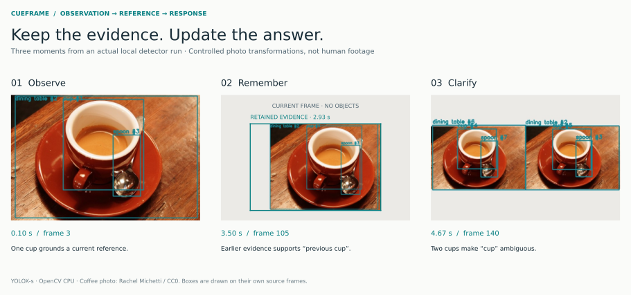
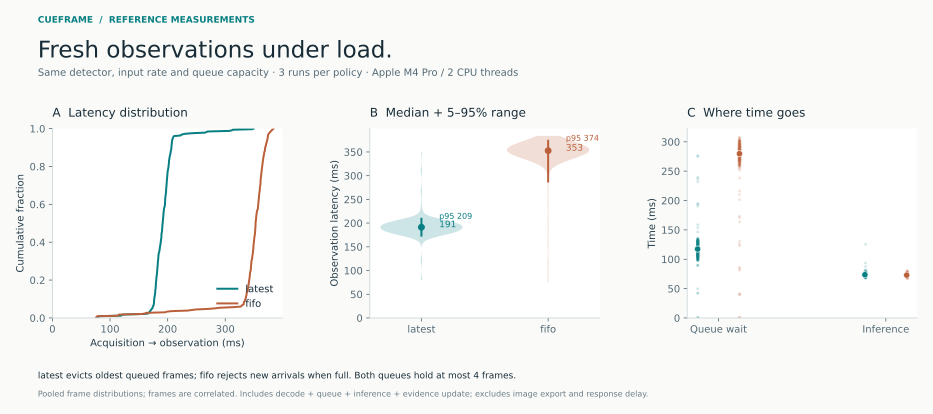
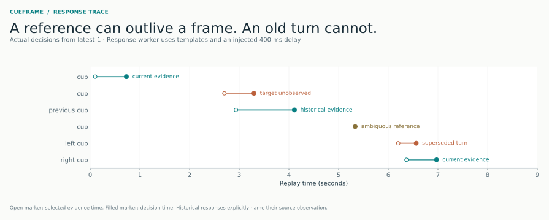

An open-source C++ runtime
Visual context for
real-time interaction.
Track what is visible, retain earlier observations, and check the evidence before a response is published.
C++20 · OpenCV · ONNX · CPU inference
Response history
Select an event to inspect its evidenceA replay of local inference on controlled transformations of a CC0 photograph. Responses use templates and an injected 400 ms delay. This is recorded output, not live browser inference.
Temporal evidence
A current view, an earlier observation, and the distinction between them.

Latency measurements
Same input, model and queue capacity. Different choices about which frame waits.
Acquisition → observation
| Queue policy | Median | p95 |
|---|---|---|
| Latest frame | 191 ms | 209 ms |
| Bounded FIFO | 353 ms | 374 ms |
YOLOX-s FP32 · Apple M4 Pro
30 input fps · 4 queue slots · 2 CPU threads
240 frames per
run · 3 runs per policy

Latency includes acquisition, decode, queue wait and evidence update; it excludes image export and response delay. Latest-frame admission trades dropped frames for fresher evidence. These measurements describe this workload, not interaction accuracy.
Inspect the evidence-to-response timeline

Runtime design
The runtime separates capture, model execution, evidence storage and response validation.
Architecture and contracts- Bounded concurrency
- Independent capture and inference, explicit overload policies, and owned frame data.
- Temporal references
- Timestamped object tracks and bounded history for current, spatial and previous-object queries.
- Publication checks
- Suppress responses when a turn is superseded, a target changes, or evidence expires.
./build/cueframe_run \
--input examples/coffee.png \
--frames 30 --out runs/demo